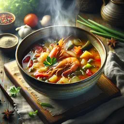

Discover the Flavors of Thailand
"Tom Yum Goong: A Spicy Thai Delight"
Tom Yum Goong is a classic Thai soup renowned for its bold flavors and aromatic spices. This hot and sour soup features a tantalizing blend of lemongrass, galangal, and kaffir lime leaves, combined with succulent shrimp.
"The key to a delicious Tom Yum Goong lies in the balance of flavors - sweet, sour, salty, and spicy."
Ingredients:
- Lemongrass: 2 stalks
- Thai basil: 1 cup
- Kaffir Lime Leaves: 3 leaves
- Shrimp: 500g
Preparation:
- Simmer the broth for 10 minutes.
- Add lemongrass, galangal, and kaffir lime leaves.
- Stir in shrimp and cook until pink.
- Season with fish sauce, lime juice, and chili paste.
- Garnish with Thai basil and serve hot.
Cooking Tips:
- 1/4 cup of fish sauce adds authentic Thai flavor.
- 1 tablespoon of chili paste gives the soup its signature heat.

| Ingredients | Quantity |
|---|---|
| Lemon | 2 Stalks |
| Thai Basil | 1 Cup |
| Kaffir Lime Leaves | 3 Leaves |
| Shrimp | 500g |